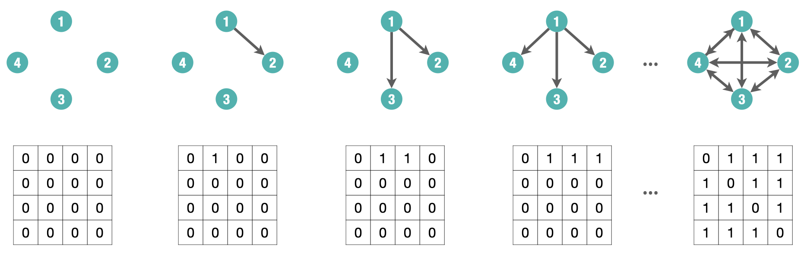

library(igraph)
library(ggraph)
library(graphlayouts)
library(networkdata)
library(intergraph)
library(RSiena)18 Stochastic Actor Oriented Models (SAOMs)
Up to this point, we have focused on modeling social networks as cross-sectional data, that is, as static snapshots of tie patterns observed at a single point in time. Models such as Erdős–Rényi, preferential attachment, and Exponential Random Graph Models (ERGMs) allow us to account for structural dependencies, attribute effects, and network complexity within such static networks.
However, social networks are inherently dynamic. Ties are not fixed; they emerge, dissolve, and evolve through time as a result of decisions made by individual actors. Treating network data as static ignores this core aspect of social life. A more realistic modeling approach must account for the sequential, actor-driven nature of network evolution.
This brings us to Stochastic Actor-Oriented Models (SAOMs), a class of models explicitly designed for longitudinal network data. Unlike cross-sectional models that treat the network as a single outcome, SAOMs treat the network as a continuous-time stochastic process driven by individual actor decisions. In this framework, changes to the network occur one tie at a time, reflecting micro-level decisions made by actors based on preferences, opportunities, and constraints.
SAOMs are particularly well-suited for panel data, i.e., multiple observations of the same network over time where both tie structures and actor attributes may co-evolve. This allows researchers to address questions such as:
- How often do actors initiate or terminate ties?
- Do actors prefer to form ties based on similarity (selection) or become more similar after forming ties (influence)?
- How do structural tendencies like reciprocity or transitivity manifest through sequential decision-making?
- Can we simulate or predict how the network may evolve in future time points?
SAOMs are one of two main frameworks for dynamic network modeling. The other is the Temporal Exponential Random Graph Model (TERGM). While TERGMs extend ERGMs to panel data by conditioning on past networks, SAOMs take a process-based view that explicitly models how ties change over time due to actor decisions.
Table 18.1 shows the core differences between ERGMs. While ERGMs model the global structure of a network at a single point in time, SAOMs treat network evolution as a dynamic process driven by actors making sequential decisions. In other words, SAOMs extend the logic of ERGMs into the temporal domain, capturing the mechanisms of change rather than just the final structure.
| ERGMs | SAOMs | |
|---|---|---|
| Data type | Cross-sectional (static snapshot) | Longitudinal (panel data, repeated observations) |
| Unit of analysis | The entire network | Individual actor decisions |
| Modeling approach | Statistical dependence among ties | Actor-based tie change process |
| Time modeling | No time dimension | Continuous-time change process |
| Common mechanisms | Reciprocity, transitivity, nodal covariates | Same, but expressed as actor preferences over changes |
| Estimation method | MCMC Maximum Likelihood (MCMCMLE) | Simulation-based Method of Moments (MoM) |
| Outcome | Probability of the observed network | Simulated network trajectories over time |
| In R | ergm (or statnet) |
RSiena |
In what follows, we focus on the SAOM framework, its components, estimation process, and how it can be used to explain and simulate network evolution.
18.1 Packages Needed for this Chapter
18.2 Running Example: Teenage Friends and Lifestyle Study
We use a running example with data from the “Teenage Friends and Lifestyle Study” (West and Sweeting 1996), which was also used in the previous chapter on ERGMs. In contrast to the earlier example that focused on a single time point and only the subset of 50 pupils, we here model the dynamics of friendship ties across all three observed waves and with the 129 pupils over all three time points, and including relevant actor-level covariates such as gender and smoking behavior. The dataset is called glasgow129 in the networkdata package, which includes the following:
- Networks: Binary, directed friendship ties measured at three time points.
- Actors: 129 pupils measured at three time points.
- Many covariates, but we focus on
- Sex: 1 = Male, 2 = Female
- Smoking: 1 = No, 2 = Occasional, 3 = Regular
We load the data from the networkdata package and extract an igraph object for each time period.
data("glasgow129")
# Load data as graph object from networkdata and extract all three wave networks
glasgow_g1 <- glasgow129[[1]]
glasgow_g2 <- glasgow129[[2]]
glasgow_g3 <- glasgow129[[3]]These igraph objects are our network snapshots and consider various SAOMs. We begin by converting each network snapshot into a binary adjacency matrix. These matrices represent the presence or absence of directed ties between actors at each time point.
# Convert to adjacency matrices
net1 <- as_adjacency_matrix(glasgow_g1, sparse = FALSE)
net2 <- as_adjacency_matrix(glasgow_g2, sparse = FALSE)
net3 <- as_adjacency_matrix(glasgow_g3, sparse = FALSE)We then combine them into a 3-dimensional array with dimensions [actor × actor × wave], which is the required format for longitudinal network data in RSiena.
# Combine into 3D array [actor x actor x wave]
net_array <- array(c(net1, net2, net3), dim = c(129, 129, 3))18.3 SAOM Framework
18.3.1 Modeling Network Evolution
Most real-world social networks are dynamic systems. Relationships between individuals form, dissolve, and evolve as a result of ongoing social interactions, personal decisions, and contextual factors. When we observe a single snapshot of a network, we can only speculate about the processes that produced it. By contrast, longitudinal network data, repeated observations of a network over time, allow us to move from static description to dynamic explanation.
Longitudinal network data consist of a set of actors \(N = \{1, 2, \dots, n\}\) and a series of observed adjacency matrices: \[ Y(t_0),\ Y(t_1),\ \dots,\ Y(t_M) \] where each matrix captures the presence or absence of ties between actors at a particular time point, that is \(y_{ij}(t) = 1\) if actor \(i\) has a tie to actor \(j\) at time \(t\), and \(y_{ij}(t) = 0\) otherwise.
These repeated measures make it possible to ask and answer key questions:
- How frequently do actors change their ties?
- What drives the formation, maintenance, or dissolution of ties?
- How do individual attributes (e.g., gender, age, group membership) shape network dynamics?
- Can we predict how the network will evolve in the future?
- How do both endogenous (network-based) and exogenous (attribute-based) factors jointly shape the network?
Moreover, understanding why networks change requires distinguishing between competing explanations. For instance, if we observe that two similar actors are connected at time \(t_1\), this might reflect selection (they formed a tie because of their similarity) or influence (they became similar after forming a tie). Only a longitudinal framework allows us to tease apart these mechanisms.
Time also matters for structural tendencies. Consider transitivity: when we observe a triadic closure (i.e., if \(i\) is tied to \(j\) and \(j\) to \(\ell\), then \(i\) may become tied to \(\ell\)), we cannot know whether it reflects an intentional closure or merely a residual pattern without knowing the order in which ties appeared.
Stochastic Actor-Oriented Models (SAOMs) offer a solution by treating network change as a continuous-time, actor-driven process. In this framework:
- The network evolves through a sequence of micro-steps where individual actors have opportunities to change their outgoing ties.
- Each actor evaluates the current network and makes decisions based on preferences (e.g., for reciprocation, closure, or similarity).
- The model simulates the timing and direction of these changes between observation moments (waves).
This actor-oriented perspective aligns closely with how ties form in real life: individuals decide whom to connect with (or disconnect from), guided by structural cues and attribute-based tendencies.
18.3.2 Stochastic Processes and Continuous-Time Markov Chains
To understand the dynamics of network evolution in Stochastic Actor-Oriented Models (SAOMs), it is helpful to first grasp the concept of a stochastic process, a collection of random variables indexed by time:
\[ \{ X(t),\ t \in T \} \]
where:
- \(T\) is the index set (typically representing time),
- \(S\) is the state space, the set of all possible values that \(X(t)\) can take.
In the context of longitudinal network analysis, the stochastic process represents the network evolving over time. That is, we can interpret the state as the network at time \(t\), so that
\[ X(t) \equiv Y(t), \]
where \(Y(t)\) is the adjacency matrix at time \(t\), with entries \(y_{ij}(t) \in \{0,1\}\) indicating whether a tie from actor \(i\) to actor \(j\) is present at time \(t\).
SAOMs are based on a particular type of stochastic process: the continuous-time Markov chain (CTMC). A CTMC is defined by:
- A finite state space \(S\) (e.g., all possible network configurations),
- A continuous time domain \(t \in [0, \infty)\),
- The Markov property, which states that the future state depends only on the present state, not on the past:
\[ P\bigl(X(t_j) = s_j \mid \{X(t): t \le t_i\}\bigr) = P\bigl(X(t_j) = s_j \mid X(t_i) = s_i\bigr) \]
This memoryless property implies that future network evolution depends only on the current configuration. In the context of SAOMs, actors make tie changes based solely on the present network structure (e.g., existing ties, shared partners, or attributes), without direct dependence on earlier configurations.
The CTMC evolves through a sequence of randomly timed transitions. Each state is held for a random duration, and transitions to the next state are governed by probability. More formally, a CTMC is characterized by:
- When a change occurs: governed by the holding time, typically modeled with an exponential distribution.
- What the next state is: determined by the jump matrix, which specifies the transition probabilities between states.
Together, holding time and jump probabilities define the full behavior of the CTMC.
Note
A continuous-time Markov chain can be understood as a process that waits in a state for a random holding time and then jumps to a new state. The cat example in Appendix B illustrates this intuition.
18.3.3 Network States and the Markov Property
Stochastic Actor-Oriented Models (SAOMs), introduced by Snijders (1996), provide a principled framework for analyzing how social networks evolve over time. Formally, network evolution is represented as a continuous-time Markov chain (CTMC) operating on a space of networks.
As previously introduced, a continuous-time Markov chain (CTMC) is characterized by three key components:
- A finite state space: For SAOMs, this is the set \(\mathcal{Y}\) of all possible directed networks on \(n\) actors. Each state \(Y \in \mathcal{Y}\) is an adjacency matrix with entries \(y_{ij} \in \{0,1\}\) for \(i \neq j\).
- A continuous-time process: Network changes (such as the creation or dissolution of ties \(y_{ij}(t)\)) occur at random points in continuous time.
- The Markov property: The probability of a transition depends only on the current network state \(Y(t)\), not on the sequence of past networks that preceded it.
In the sections that follow, we explore how each of these components is specified in SAOMs, including how actors are selected to make changes and how tie updates are determined.
Let \(\mathcal{Y}\) denote the set of all possible adjacency matrices (i.e., network configurations) defined on \(n\) actors. Each matrix \(Y \in \mathcal{Y}\) represents a possible state of the network.
For directed networks without self-ties, the size of this state space is:
\[ |\mathcal{Y}| = 2^{n(n-1)} \]
This follows from the fact that each of the \(n(n-1)\) possible directed ties between distinct actors \((i,j)\) with \(i \neq j\) can independently be either present (\(y_{ij} = 1\)) or absent (\(y_{ij} = 0\)).
In the SAOM framework, the stochastic process \(\{Y(t), t \geq 0\}\) evolves over this state space, with each realization corresponding to a sequence of network configurations over time.
For instance, with a 4-node directed network shown in Figure 18.1, we can represent different adjacency matrices as the network evolves. The figure illustrates a step-by-step sequence of tie changes, starting from an empty network and progressing toward a more connected structure.

Stochastic Actor-Oriented Models (SAOMs) assume that the network evolves as a continuous-time Markov process. Formally, the stochastic process \(\{Y(t), t \geq 0\}\) changes over time through a sequence of small, actor-driven modifications, where individual ties \(y_{ij}(t)\) may be created or dissolved.
In empirical applications, however, we do not observe the full trajectory of this process. Instead, we observe the network only at a finite set of discrete time points (e.g., survey waves): \[ t_1,\ t_2,\ \ldots,\ t_M. \]
At each observation moment, we record a network \(Y(t_m)\), but the intermediate tie changes (i.e., which actor changed which tie \((i,j)\) and at what exact time) remain unobserved. These changes occur in a latent process between observation moments.
This distinction is fundamental:
- Observed process: a sequence of network snapshots \(Y(t_1), Y(t_2), \ldots, Y(t_M)\).
- Latent process: the underlying continuous-time evolution, consisting of a sequence of micro-steps in which actors stochastically update individual ties \(y_{ij}(t)\) based on the current network state \(Y(t)\).
SAOMs aim to model and simulate this latent evolution process, allowing us to infer the actor-level mechanisms that most likely generated the observed changes between \(Y(t_1)\) and \(Y(t_M)\).
A central assumption of Stochastic Actor-Oriented Models (SAOMs) is that the probability of moving to a new network state depends only on the current state, not on the path taken to get there. This is the Markov property and is formally defined as: \[ P\bigl(Y(t_j) = y' \mid \{Y(t): t \leq t_i\}\bigr) = P\bigl(Y(t_j) = y' \mid Y(t_i) = y\bigr) \] where \(Y(t)\) denotes the network state (i.e., adjacency matrix) at time \(t\), and \(y, y' \in \mathcal{Y}\) are particular network configurations at times \(t_i\) and \(t_j\), respectively.
In other words, the future evolution of the process depends solely on the current network state \(Y(t_i)\) and not on the entire sequence of previous states. The model is memoryless: it “forgets” the past once the current state is known.
In the context of SAOMs, this means that when an actor is given the opportunity to make a change, such as forming or dissolving a tie \(y_{ij}(t)\), they do so based only on the current network structure and covariate information. There is no dependence on the path the network took to reach its current configuration.
This assumption significantly simplifies the modeling of network dynamics. It eliminates the need to track full network histories and allows for tractable simulation-based estimation. Conceptually, it also aligns with many social processes where actors respond to their current social environment rather than recalling a complete relational past.
Nonetheless, the Markov assumption is a modeling abstraction. While it facilitates analysis and interpretation, it may not capture certain behaviors where history matters, such as long-term reciprocity, reputation building, or delayed responses. Still, for many applications, it offers a powerful and flexible framework for understanding how networks evolve over time.
18.3.4 Actor-Oriented Micro-Steps
A central challenge in modeling network dynamics is the vast number of possible network configurations. For a directed network with \(n\) actors, the state space \(\mathcal{Y}\) contains \(2^{n(n-1)}\) possible networks, making exhaustive evaluation of all potential transitions computationally infeasible.
SAOMs address this by adopting an actor-driven approach. Instead of modeling global changes to the network, SAOMs assume that individual actors make decisions about their outgoing ties through a series of small, sequential updates. This simplifies the modeling process while remaining grounded in a realistic representation of social behavior.
The SAOM framework relies on three core assumptions:
One actor at a time: At each micro-step, a single actor \(i\) is randomly selected and given the opportunity to revise their outgoing ties. This reflects individual, sequential decision-making.
One tie at a time: The selected actor \(i\) considers one outgoing tie \(y_{ij}(t)\) for some \(j \neq i\), and may choose to create it (\(y_{ij}(t) = 1\)), dissolve it (\(y_{ij}(t) = 0\)), or leave it unchanged. Only one tie variable can change per step, which keeps the space of possible transitions manageable.
Actor-controlled change: Each actor controls only their own outgoing ties. Tie changes arise solely from the actor’s individual evaluation of the current network state \(Y(t)\) and are not the result of simultaneous or coordinated actions.
Together, these assumptions define a process of sequential micro-steps, each involving:
- Selecting an actor \(i\) at random,
- Considering a possible change to one tie \(y_{ij}(t)\),
- And waiting a randomly determined time before the next opportunity arises.
This process unfolds in continuous time and follows the structure of a continuous-time Markov chain (CTMC). It consists of two key components: the holding time, which determines how long the current network state \(Y(t)\) persists, and the jump chain, which defines the probability of transitioning to a new network state via a single tie update.
18.3.5 Rate Function and Jump Chain
The holding time in SAOMs refers to the waiting period before an actor is given the opportunity to change one of their outgoing ties. In accordance with the properties of a continuous-time Markov chain (CTMC), this waiting time is modeled as an exponentially distributed random variable.
For actor \(i\), the holding time \(T_i\) has the following probability density function: \[ f_{T_i}(t) = \lambda_i e^{-\lambda_i t}, \quad \lambda_i > 0, \quad t > 0 \] Here, \(\lambda_i\) is the rate parameter, determining how frequently actor \(i\) receives opportunities to change their ties. The choice of \(\lambda_i\) defines how the actor selection process unfolds:
Homogeneous specification: All actors have the same rate \(\lambda\), implying equal opportunity: \[ \lambda_i = \lambda \quad \text{for all } i, \qquad P(i \text{ is selected}) = \frac{1}{n} \]
Heterogeneous specification: The rate varies across actors based on covariates or network structure: \[ \lambda_i = \lambda_i(\theta, Y(t), v) \] where \(\theta\) is a parameter vector, \(Y(t)\) is the current network configuration, and \(v\) are actor-specific covariates. In this case: \[ P(i \text{ is selected}) = \frac{\lambda_i(\theta, Y(t), v)}{\sum_{r=1}^{n} \lambda_r(\theta, Y(t), v)} \] This flexibility allows the model to reflect actor-level heterogeneity in the speed of network change. In many applications, however, a homogeneous rate is assumed for simplicity and interpretability.
This setup relies on the memoryless property of the exponential distribution: \[ P(T_i > s + t \mid T_i > t) = P(T_i > s) \] That is, the probability that actor \(i\) will be selected in the next instant is unaffected by how long they have already been waiting. This property aligns naturally with the continuous-time Markov assumption and greatly simplifies simulation. In summary, the holding time determines when micro-steps occur.
Once an actor has been selected and the holding time has elapsed, the next question becomes: what change (if any) will this actor make to the network? This is governed by the jump chain, which determines the next network state.
At each micro-step, actor \(i\) evaluates a set of feasible alternatives \(\{Y^{(a)}\}_{a=1}^{A}\), each differing from the current network \(Y(t)\) by at most a change in one outgoing tie \(y_{ij}(t)\) (i.e., forming, dissolving, or maintaining a tie).
Each alternative \(Y^{(a)}\) is assigned a utility: \[ U_{ia} = F_{ia} + \varepsilon_{ia} \]
Here, \(F_{ia}\) represents the deterministic component of the utility function, typically defined through an objective function that incorporates structural effects such as reciprocity, transitivity, or covariate similarity. The \(\varepsilon_{ia}\) term introduces randomness via a Gumbel-distributed disturbance, reflecting unobserved preferences or decision noise.
This setup defines a random utility model, where actor \(i\) selects among alternatives probabilistically. Under the Gumbel assumption, the choice probabilities follow a multinomial logit form:
\[ p_{ia} = \frac{\exp(F_{ia})}{\sum_{b=1}^{A} \exp(F_{ib})} \]
where \(F_{ia}\) is the deterministic utility that actor \(i\) assigns to alternative \(a\), corresponding to the candidate network \(Y^{(a)}\).
These probabilities define the jump chain, describing the likelihood of moving from the current network state \(Y(t)\) to a new state \(Y^{(a)}\). Because only one actor changes at most one tie at each micro-step, the set of feasible transitions is small, making the process computationally tractable.
We now make explicit how the deterministic component \(F_{ia}\) is constructed. It is given by an objective function:
\[ F_{ia} = f_i(\theta, Y^{(a)}) = \sum_{k=1}^{K} \theta_k \cdot s_{ik}(Y^{(a)}, v) \]
where:
- \(Y^{(a)}\) is the candidate network after a tie change,
- \(s_{ik}(Y^{(a)}, v)\) is the contribution of effect \(k\) for actor \(i\),
- \(\theta_k\) is the parameter associated with that effect.
This formulation makes clear that the utility of an alternative depends on how the resulting network configuration aligns with the actor’s preferences, as captured by the statistics \(s_{ik}(\cdot)\). The random utility formulation introduces stochasticity while allowing for interpretable parameter estimation.
In summary, the jump chain determines which network configuration the process moves to, conditional on actor selection. Combined with the holding time, which governs when actors are selected, it defines the dynamics of the SAOM as a continuous-time Markov process.
18.3.6 Endogenous Effects in the Objective Function
The objective function introduced above is a linear combination of effects, each capturing a specific structural pattern or social mechanism. These effects are conceptually similar to those used in Exponential Random Graph Models (ERGMs), although they differ in interpretation due to the dynamic and actor-oriented nature of SAOMs. They fall into two main categories:
- Endogenous effects: derived from the structure of the network itself.
- Exogenous effects: related to external actor attributes.
The objective function for actor \(i\) evaluating a candidate network \(Y^{(a)}\) is given by:
\[ f_i(\theta, Y^{(a)}) = \sum_{k=1}^{K} \theta_k \cdot s_{ik}(Y^{(a)}) \]
where \(\theta_k\) is the parameter for effect \(k\), and \(s_{ik}(Y^{(a)})\) is the value of effect \(k\) evaluated for actor \(i\) in the candidate network \(Y^{(a)}\). Each effect enters the objective function with an associated parameter to be estimated from data. The weighted sum of these effects (together with a stochastic component) determines the actor’s utility for each potential tie change, guiding the probabilistic decision-making process at the heart of the SAOM framework.
This section focuses on a set of commonly used endogenous effects, that is, effects based solely on the structure of the network (without using external covariates). Many other effects can be specified, depending on the theoretical focus and complexity of the network under study.
1. Outdegree Effect
Similar to the edges term in ERGM, this effect reflects the tendency (or cost) of maintaining ties. It counts the number of outgoing ties from actor \(i\) in the candidate network configuration \(Y^{(a)}\):
\[ s_i^{\text{out}}(Y^{(a)}) = \sum_{j} y^{(a)}_{ij} \]
This term typically has a negative coefficient, penalizing actors for having too many ties, and thus introducing a cost to maintaining social relationships.
2. Reciprocity Effect
The reciprocity effect captures the tendency for actors to form mutual ties (equivalent to the mutual term in ERGMs). It counts how many of actor \(i\)’s outgoing ties are reciprocated:
\[ s_i^{\text{rec}}(Y^{(a)}) = \sum_{j} y^{(a)}_{ij} \, y^{(a)}_{ji} \]
A positive coefficient for this effect reflects a preference for mutual connections, e.g., “I send a tie to those who also send one to me.”
3. Transitive Triplets Effect
Closely related to the triangles or GWESP terms in ERGMs, this effect models triadic closure. The transitive effect reflects a tendency toward forming closed triads. If actor \(i\) sends a tie to \(h\), and \(h\) sends a tie to \(j\), then \(i\) is more likely to send a tie to \(j\).
\[ s_i^{\text{trans}}(Y^{(a)}) = \sum_{j,h} y^{(a)}_{ij} \, y^{(a)}_{jh} \, y^{(a)}_{ih} \]
This effect captures the formation of transitive triples (closed triads), where \(i \to j\), \(j \to h\), and \(i \to h\). It reflects processes such as social closure, hierarchy, and the formation of cohesive subgroups.
4. Three-Cycle Effect
The three-cycle effect (analogous to cyclic triads in ERGMs) captures the tendency of actors to form circular structures in the network. Specifically, it counts the number of directed cycles of length three involving actor \(i\):
\[ s_i^{\text{cyc}}(Y^{(a)}) = \sum_{j,h} y^{(a)}_{ij} \, y^{(a)}_{jh} \, y^{(a)}_{hi} \]
This effect captures patterns such as \(i \to j \to h \to i\), representing feedback loops or non-hierarchical structures in the network. It often receives a negative coefficient, discouraging cyclic patterns and favoring more hierarchical or transitive structures.
Next, we introduce exogenous effects, which link actor behavior to covariates such as attributes or group memberships.
18.3.7 Exogenous Effects in the Objective Function
In addition to modeling endogenous network tendencies (such as reciprocity or transitivity), SAOMs allow the inclusion of exogenous covariates that influence tie formation. These covariates capture observed attributes of actors or dyads that may shape network dynamics.
We denote covariate information by \(v\). Depending on the context, \(v\) may include:
- Actor-level covariates: \(v_i\) (e.g., age, gender, smoking status),
- Dyadic covariates: \(v_{ij}\) (e.g., geographic distance or similarity between actors \(i\) and \(j\)).
As in ERGMs, these effects enter the objective function, which represents the utility that actor \(i\) associates with a candidate network configuration \(Y^{(a)}\):
\[ f_i(\theta, Y^{(a)}) = \sum_{k=1}^{K} \theta_k \cdot s_{ik}(Y^{(a)}, v) \]
Here, the statistics \(s_{ik}(Y^{(a)}, v)\) may depend not only on the network structure \(Y^{(a)}\) but also on the covariates \(v\). This allows actor \(i\)’s evaluation of potential tie changes to incorporate both structural features of the network and observed attributes of actors or dyads.
Below are common types of exogenous effects.
1. Individual-Level Covariate Effects
These effects are based on actor-level covariates and can enter the objective function in two ways:
Covariate-Ego Effect
This effect captures whether actors with a particular covariate value are more (or less) likely to form outgoing ties. \[ s_i^{\text{ego}}(Y^{(a)}, v) = v_i \sum_j y^{(a)}_{ij} \] Here, \(v_i\) is the covariate value for actor \(i\) (the ego), and the statistic counts how many ties they initiate. If the covariate is binary, this can test whether having a trait (e.g., belonging to a particular group) is associated with being more active in sending ties.Covariate-Alter Effect
This effect reflects a preference for forming ties to others (alters) with certain attribute values. \[ s_i^{\text{alter}}(Y^{(a)}, v) = \sum_j y^{(a)}_{ij} \, v_j \] Here, \(v_j\) is the covariate value of the potential receiver. A positive parameter indicates that actors are more likely to send ties to alters with higher covariate values (and vice versa).
2. Dyadic Covariate Effects
SAOMs also allow modeling based on dyadic similarity, capturing whether actors prefer to connect with others who are similar in some attribute.
A common specification is the similarity-based effect: \[ s_i^{\text{sim}}(Y^{(a)}, v) = \sum_j y^{(a)}_{ij} \left( 1 - \frac{|v_i - v_j|}{\max(v) - \min(v)} \right) \]
This statistic increases when actor \(i\) sends ties to actors \(j\) who are similar in their covariate values. The similarity term is normalized to the interval \([0,1]\), where 1 indicates perfect similarity and 0 indicates maximal difference.
For binary covariates, this simplifies to an indicator function: \[ s_i^{\text{sim}}(Y^{(a)}, v) = \sum_j y^{(a)}_{ij} \cdot \mathbf{1}(v_i = v_j) \]
This effect captures homophily, the tendency of actors to form ties with others who share the same attribute (e.g., same gender or group membership).
18.3.8 Choosing Effects for the Objective Function
When specifying a Stochastic Actor-Oriented Model (SAOM), the first step is to select which effects to include in the actor’s objective function \(f_i(\theta, Y^{(a)})\). At a minimum, models typically include an outdegree effect (capturing a baseline tendency to form ties) and a reciprocity effect (capturing the preference for mutual ties).
Beyond these baseline effects, additional terms should be guided by substantive theory or research hypotheses. For example, if theory suggests that individuals tend to befriend friends of their friends, a transitive triplet effect may be appropriate. If social similarity (homophily) based on covariates such as gender is expected, similarity-based covariate effects can be included.
These choices tailor the model to reflect specific structural patterns and attribute-driven mechanisms. While only a few examples are presented here, SAOMs provide a wide range of endogenous and exogenous effects that can be combined to test theoretically meaningful processes of network evolution.
18.3.9 Parameter Estimation and Interpretation
In Stochastic Actor-Oriented Models (SAOMs), each parameter \(\theta_k\) quantifies the importance of a specific effect \(s_{ik}(Y^{(a)}, v)\) in the actor’s decision-making process during network evolution. These parameters help us understand how structural features or covariates influence the likelihood of different tie changes.
The interpretation of \(\theta_k\) is as follows:
- If \(\theta_k = 0\), the statistic \(s_{ik}(Y^{(a)}, v)\) has no effect on the transition probabilities and does not influence network dynamics.
- If \(\theta_k > 0\), actor \(i\) is more likely to move toward network states \(Y^{(a)}\) that increase the value of \(s_{ik}(Y^{(a)}, v)\).
- If \(\theta_k < 0\), actor \(i\) prefers changes that decrease the value of \(s_{ik}(Y^{(a)}, v)\).
Importantly, these preferences are assumed to be stable over time. That is, the parameter vector \(\theta = (\theta_1, \dots, \theta_K)\) is assumed to be constant throughout the observation period: \[ \theta_1, \dots, \theta_K \text{ are constant over time.} \]
Parameter estimation in SAOMs is performed using simulation-based methods, as implemented in the RSiena R package (SIENA: Simulation Investigation for Empirical Network Analysis).
The core idea is to simulate the network evolution process under the assumed model, compare the simulated outcomes with observed data, and iteratively adjust the parameters to improve the fit. This approach is based on the method of moments, where simulated network statistics are aligned with their empirical counterparts.
The estimation process typically involves:
- Defining the observed networks at multiple time points,
- Specifying the effects (endogenous and exogenous) to include in the model,
- Running simulations and updating parameters iteratively until convergence.
To assess whether a particular effect significantly contributes to the network dynamics, we test each parameter \(\theta_k\):
- Null Hypothesis (\(H_0\)): The effect has no influence on tie changes, \[ H_0 : \theta_k = 0 \]
- Alternative Hypothesis (\(H_1\)): The effect has a systematic influence, \[ H_1 : \theta_k \ne 0 \]
Under standard conditions, inference is based on the t-ratio, defined as the ratio of the parameter estimate to its standard error: \[ \left| \frac{\theta_k}{\text{s.e.}(\theta_k)} \right| \ge 2 \;\Rightarrow\; \text{Reject } H_0 \]
If the absolute t-ratio exceeds 2, the parameter is considered significantly different from zero at approximately the 5% significance level.
18.4 Extending SAOMs: The Co-Evolution of Networks and Behavior
1. Basic Shape Effects
These effects govern the overall shape or distribution of the behavior.
Linear shape effect
This effect encourages an increase or decrease in behavior depending on the sign of the parameter:\[ s^\text{beh}_{i,\text{linear}}(z) = z_i \]
If \(\theta_{\text{lin}} > 0\), higher behavior values are favored. If \(\theta_{\text{lin}} < 0\), lower behavior values are favored.
Quadratic shape effect
This effect penalizes extreme behavioral values (high or low), favoring moderation:\[ s^\text{beh}_{i,\text{quadratic}}(z) = z_i^2 \]
A negative estimate for this effect leads to stabilization around the middle values of the behavioral scale, i.e., it favors moderate behavior (e.g., smoking occasionally rather than regularly).
Note that the basic shape effects are typically included in the behavioral model specification.
3. Network Position Effects
Network position effects model whether an actor’s behavior is associated with their position in the network. In this context, they are behavioral effects: they ask whether actors with more incoming or outgoing ties tend to have higher or lower behavioral values.
Outdegree effect
This effect investigates whether actors with more outgoing ties tend to have different behavioral values:\[ s^\text{beh}_{i,\text{out}}(Y, z) = z_i \sum_{j=1}^n y_{ij} \]
Indegree effect
This effect models whether being popular (having many incoming ties) is related to behavior:\[ s^\text{beh}_{i,\text{ind}}(Y, z) = z_i \sum_{j=1}^n y_{ji} \]
A positive parameter estimate for a position effect means that higher behavioral values are associated with the corresponding network position. For instance, if the behavior is smoking, a positive outdegree effect suggests that actors who smoke more tend to send more ties, while a positive indegree effect suggests that actors who smoke more tend to receive more ties.
A negative parameter estimate indicates that higher behavioral values are associated with fewer ties in that position. For example, actors with higher smoking values may be less active in sending ties or less popular as recipients, depending on whether the outdegree or indegree effect is negative.
4. Covariate Effects
Covariate effects capture how actor-level attributes, such as sex, age, or socioeconomic status, directly influence behavioral change. Unlike social influence effects, these effects do not depend on the network ties themselves; they test whether actors with certain attributes tend to have higher or lower behavioral values.
Covariate effect
Actor attributes can be included in the behavioral objective function as main effects. This indicates whether an attribute \(v_i\) is associated with higher or lower behavior values:\[ s^\text{beh}_{i,\text{covariate}}(v) = v_i \]
These effects capture how an actor’s covariate value influences their tendency to increase or decrease their behavioral score. For example, we might ask: Are boys or girls more likely to adopt a risky behavior? Do older students tend to reduce smoking over time?
18.5 Estimating SAOMs in RSiena
RSiena is an R package for estimating and simulating Stochastic Actor-Oriented Models (SAOMs) for network and behavioral dynamics. It is specifically designed to analyze longitudinal network data, where social ties and actor attributes evolve over time.
In RSiena, the distinction between modeling network evolution and the co-evolution of networks and behavior begins with how the dependent variables are specified.
If only the network is included as a dependent variable (i.e., a sienaDependent network object), the model focuses on network evolution. This framework captures how actors form, maintain, or dissolve ties over time. It can include covariates (such as gender or smoking status) to explain social selection, meaning that actor attributes influence the likelihood of tie formation or dissolution. In this case, individual attributes are treated as exogenous and remain fixed over time.
Alternatively, RSiena allows for co-evolution models by including both a network and a behavioral variable as dependent variables. This setup enables the simultaneous modeling of two processes: how networks evolve and how actors’ behaviors change over time. This makes it possible to study social influence, where individuals may adopt behaviors similar to those of their network peers. The model thus captures both the selection of network ties based on covariates and the influence of peers on individual behavior.
Below, we outline the typical steps involved in estimating SAOMs using RSiena:
Preparing the data
Import and format the network and covariate data into the appropriate structure. This includes creating adjacency matrices for networks observed over time and vectors or matrices for actor-level covariates. These are then converted into RSiena objects such assienaDependent,coCovar, orvarCovar.Specifying the model
Define the model by selecting the effects to include. UsegetEffects()to retrieve the default effects object andincludeEffects()to add endogenous and covariate-related effects.Estimating the model
Set up the estimation procedure usingsienaAlgorithmCreate()and estimate the model withsiena07(). Evaluate convergence and diagnostic statistics to ensure reliable results.Interpreting the results
Analyze the estimated parameters to understand the underlying social processes. This involves examining the direction, magnitude, and statistical significance of effects to interpret mechanisms of network change or co-evolution.
18.5.1 Model 1: Structural Network Effects
We begin by estimating a simple model specification that includes only two effects: an outdegree (density) effect and a reciprocity effect. These capture baseline tie propensity and the tendency toward mutual ties, without incorporating more complex structural or covariate-based influences. In other words, no covariates are included, and the model is specified purely in terms of endogenous network dynamics.
We first convert the 3D network array net_array into a sienaDependent object using the sienaDependent() function. This step tells RSiena that the array represents a dependent network variable observed over multiple waves. The resulting object is then used as input for model specification and estimation.
# Convert array into RSiena dependent object
siena_net <- sienaDependent(net_array)After defining the network as a sienaDependent object, we now wrap it into a complete RSiena data object using sienaDataCreate(). This function prepares the data for model specification and estimation by bundling all input variables (here just the network) into a structure that the estimation algorithm can use.
Since we are modeling only the network (and no actor covariates yet), we simply pass siena_net as the argument.
# Create a Siena data object
data_mod1 <- sienaDataCreate(siena_net)In RSiena, model specification is driven by the concept of “effects” which represent the structural features, covariate influences, and behavioral mechanisms that are hypothesized to drive network or behavioral change. By default, getEffects() lists all possible effects available for the data structure (e.g., network dynamics, covariates, behaviors). It doesn’t add any effects to the model yet though, it just initializes the structure that will hold them.
We begin by calling getEffects() on our data_mod1 object to create a default effects object. This object holds all possible effects for the given data structure and is used as a base for customization. You can have a look at these effects directly by calling it.
# Define the effects: start with default effect object
my_effects <- getEffects(data_mod1)
my_effectsThese are the exact effects included by default:
- Rate parameters for each wave transition (e.g., Period 1 and Period 2)
- Outdegree (density): capturing the baseline propensity to send ties
- Reciprocity: modeling the tendency to reciprocate received ties
Since our simple model includes only these two structural effects, there is no need to add further effects using includeEffects() at this stage.
Before running the estimation, we need to define the estimation algorithm that RSiena will use. This is done with the function sienaAlgorithmCreate(), which sets up the computational parameters for the simulation-based estimation process.
In the example below, we assign the algorithm to the object my_algorithm. The projname argument specifies a name for the project; RSiena will use this name to organize temporary output files and logs related to the estimation.
# Define the estimation algorithm
my_algorithm <- sienaAlgorithmCreate(projname = "saom_1", seed = 1108)
Note
Setting a seed as argument ensures reproducible results across runs given same R setup. Due to the stochastic nature of the algorithm and differences in computational environments, minor variations may still occur across:
- different versions of R or RSiena,
- different operating systems,
- or when using parallel processing.
This algorithm object is later passed into the siena07() function to control how the estimation is performed. You can customize various settings like number of iterations, convergence thresholds, or use defaults (as we do here) for a basic estimation.
Now that we’ve set up the data, specified the effects, and defined the estimation algorithm, we can estimate the Stochastic Actor-Oriented Model using the siena07() function. This function runs the RSiena estimation procedure. It takes the following inputs:
my_algorithm: the algorithm settings we defined earlier.data = data_mod1: the network data in RSiena format.effects = my_effects: the specified model effects (in this case, outdegree and reciprocity).batch = TRUE: suppresses user prompts during the estimation, making it suitable for scripted or automated runs.
# Estimate the SAOM
saom_1 <- siena07(
my_algorithm,
data = data_mod1,
effects = my_effects,
batch = TRUE
)To print a summary of the estimation results:
# View results
saom_1Estimates, standard errors and convergence t-ratios
Estimate Standard Convergence
Error t-ratio
Rate parameters:
0.1 Rate parameter period 1 8.5913 ( 0.7025 )
0.2 Rate parameter period 2 7.2618 ( 0.5713 )
Other parameters:
1. eval outdegree (density) -2.4128 ( 0.0372 ) -0.0075
2. eval reciprocity 2.7079 ( 0.0849 ) -0.0206
Overall maximum convergence ratio: 0.0254
Total of 2067 iteration steps.A nicer summary of the model is obtained by running the following, which renders the table of results inline (including significance stars for easy interpretation).
siena_table(saom_1, type = "html", sig = TRUE)| Effect | par. | (s.e.) | ||||||
| Rate 1 | 8.591 | (0.703) | ||||||
| Rate 2 | 7.262 | (0.571) | ||||||
| outdegree-(density) | –2.413 | *** | (0.037) | |||||
| reciprocity | 2.708 | *** | (0.085) | |||||
|
|
||||||||
| † p < 0.1; * p < 0.05; ** p < 0.01; *** p < 0.001; | ||||||||
| all convergence t ratios < 0.03. | ||||||||
| Overall maximum convergence ratio 0.03. | ||||||||
We now interpret the results from Model 1, beginning with an assessment of convergence, followed by the interpretation of the estimated parameters.
Convergence Assessment
Before interpreting parameter estimates, it’s essential to assess whether the estimation has converged adequately. In RSiena, convergence is assessed using two main criteria:
Overall maximum convergence ratio: This value summarizes how far the simulated statistics deviate from the observed ones. A value below 0.25 is generally considered acceptable, with values below 0.15 indicating very good convergence.
Individual convergence t-ratios:
For each effect, the t-ratio compares the observed statistic to the average from the simulated networks. If the estimation has converged, these t-ratios should be close to zero. Values below 0.10 are ideal, and below 0.20 is generally acceptable.
All convergence t-ratios in our Model 1 ouput are below 0.03, which suggests that the simulated statistics align closely with the observed network statistics for each parameter. This implies that the estimated model reproduces the key structural features of the observed data with high precision. Additionally, the overall maximum convergence ratio is 0.04, which is well below the commonly used threshold of 0.10, and even under the more conservative cutoff of 0.05. This means that none of the parameters are associated with poor convergence behavior. Taken together, these diagnostics confirm that the SAOM estimation process has stabilized, and the parameter estimates can be interpreted with confidence.
Rate Parameters
The rate parameters capture how frequently actors are given the opportunity to change their outgoing ties between two consecutive observation moments. These are modeled as intensities in a continuous-time Markov framework.
The estimates can be interpreted as follows:
Rate 1: Estimate = 8.580 (SE = 0.698)
On average, each actor had about 9 opportunities to change a tie between waves 1 and 2.Rate 2: Estimate = 7.238 (SE = 0.605)
On average, each actor had about 7 opportunities to change a tie between waves 2 and 3.
These values do not indicate how many changes were actually made, but how often actors could have made a change. Since actors may choose not to modify a tie (i.e., retain the current state), the actual number of observed changes is typically lower than the number of opportunities.
Network Dynamics
Once an actor is given an opportunity to change a tie, their decision is guided by an objective function that evaluates alternative network states. Each effect included in the model represents a social mechanism influencing this decision.
The main effects in this model are:
Outdegree (density): Estimate = –2.411 (SE = 0.041)
Strong negative effect: actors are generally reluctant to form many ties.Reciprocity: Estimate = 2.705 (SE = 0.086)
Strong positive effect: actors strongly prefer to reciprocate existing ties.
Both estimates are statistically significant, as their t-ratios exceed 2.
So, how do we interpret the parameter estimates?
Outdegree (density): \(\theta_{\text{out}} = -2.411\)
A strong negative value indicates that actors prefer sparser networks. Forming new ties carries a cost, so additional ties are less likely unless offset by other favorable effects.
Reciprocity: \(\theta_{\text{rec}} = 2.705\)
A strong positive value reflects a preference for reciprocating existing ties. If another actor sends a tie to ego, ego is much more likely to return it.
These effects jointly determine how actors evaluate potential tie changes. The objective function for actor \(i\) can be written as:
\[ f_i(\theta, Y^{(a)}) = \theta_{\text{out}} \sum_{j} y^{(a)}_{ij} + \theta_{\text{rec}} \sum_{j} y^{(a)}_{ij} \, y^{(a)}_{ji} \]
To understand this, consider two scenarios:
Adding a reciprocated tie
Suppose \(y_{ji}(t) = 1\) (the other actor has already sent a tie), and actor \(i\) considers forming \(y_{ij} = 1\). The change in utility is:\[ -2.411 + 2.705 = 0.294 \]
This yields a positive utility change, making the move likely.
Adding a non-reciprocated tie
If \(y_{ji}(t) = 0\), the tie is not reciprocated. The utility change is:\[ -2.411 \]
This is negative, making the change unlikely.
Overall, the results indicate that actors strongly prefer reciprocated ties and are cautious about forming many new ties. Reciprocated ties generate positive utility, while unreciprocated ties are penalized. These patterns reflect well-known social mechanisms: a preference for mutual relationships and an aversion to the costs of maintaining many ties.
18.5.2 Model 2: Structural and Covariate Effects
Sociological theory suggests that, beyond general tendencies such as reciprocity and transitivity, actors are influenced by individual characteristics when forming or maintaining ties. In adolescent friendship networks, one of the most important predictors of tie formation is behavioral similarity, such as shared lifestyle choices or habits.
Having established a baseline SAOM using only endogenous structural effects (e.g., outdegree and reciprocity), we now extend the model to incorporate actor-level covariates. By including exogenous attributes such as sex and smoking behavior, we can investigate how individual characteristics shape tie formation in addition to structural patterns. This richer specification allows us to test more nuanced hypotheses about social selection and influence mechanisms within the network.
As discussed in Section 18.3.7, incorporating covariates into the objective function requires distinguishing between different types of effects:
- Ego effects: How an actor’s own covariate value influences their tendency to form or maintain ties (e.g., do smokers send more ties?).
- Alter effects: How the recipient’s covariate value affects the likelihood of receiving a tie (e.g., are smokers more likely to be chosen as friends?).
- Similarity effects: Whether actors prefer to form ties with others who are similar to themselves (e.g., are adolescents more likely to befriend others with similar smoking behavior?).
This extended specification remains actor-oriented and stochastic but adds an important layer of covariate-based preference. It allows us to distinguish between purely structural mechanisms and individual-level traits influencing network evolution, aligning more closely with theoretical insights from social psychology and adolescent health research.
Building on Model 1, which included only outdegree (density) and reciprocity, we now incorporate exogenous covariate information to obtain a more nuanced model of friendship dynamics.
In Model 2, we treat sex as a fixed covariate and smoking behavior as a changing covariate observed at each wave. We include the following additional effects:
- Ego effect of smoking: Does an adolescent’s smoking status influence how many ties they send?
- Alter effect of smoking: Are smokers more likely to receive ties?
- Similarity in smoking: Are adolescents more likely to form ties with others who have similar smoking behavior?
- Sex effects: Do patterns of tie formation differ by sex?
In sum, Model 2 captures not only structural tendencies in friendship formation but also how individual traits shape social dynamics, resulting in a more realistic and theoretically grounded model of network evolution.
We begin by converting the 3D network array into a sienaDependent object.
# Convert array into RSiena dependent object
siena_net <- sienaDependent(net_array)Like before, this object represents the longitudinal network that serves as the dependent variable in the SAOM. Different from before, we extract covariate values from the network’s node attributes. Sex (sex.F) is treated as a time-invariant covariate, while smoking behavior (familysmoking) is treated as time-varying across the three network waves.
# Extract sex and recode to numeric: 1 = Female, 0 = Male
sex_char <- V(glasgow_g2)$sex.F
sex_num <- ifelse(sex_char == "F", 1, ifelse(sex_char == "M", 0, NA))
# convert to fixed covariate object
sex_cov <- coCovar(sex_num)
# Extract smoking behavior (assumed changing)
smoke1 <- as.numeric(V(glasgow_g1)$tobacco)
smoke2 <- as.numeric(V(glasgow_g2)$tobacco)
smoke3 <- as.numeric(V(glasgow_g3)$tobacco)
smoking_array <- cbind(smoke1, smoke2, smoke3)
# convert to changing covariate object
smoking_cov <- varCovar(smoking_array)Next we combine the network and covariates into a single Siena data object that will be used for estimation.
data_mod2 <- sienaDataCreate(siena_net, sex_cov, smoking_cov)We define the effects to be included in the model. This includes structural effects (like outdegree, reciprocity, and transitive triplets) as well as ego, alter, and similarity effects for both sex and smoking covariates.
# Start with the default effect set
my_effects <- getEffects(data_mod2)
# Add structural effects
my_effects <- includeEffects(my_effects, outdegree, recip, transTrip)
# Add effects for sex
my_effects <- includeEffects(
my_effects,
egoX,
altX,
simX,
interaction1 = "sex_cov"
)
# Add effects for smoking
my_effects <- includeEffects(
my_effects,
egoX,
altX,
simX,
interaction1 = "smoking_cov"
)We define the estimation settings using sienaAlgorithmCreate(). A seed is included to support reproducibility of the results.
my_algorithm <- sienaAlgorithmCreate(projname = "saom_2", seed = 1108)We now estimate the model using the siena07() function, which runs the simulation-based estimation procedure.
saom_2 <- siena07(
my_algorithm,
data = data_mod2,
effects = my_effects,
batch = TRUE
)Finally, as before, we display the model results inline.
siena_table(saom_2, type = "html", sig = TRUE)| Effect | par. | (s.e.) | ||||||
| Rate 1 | 10.710 | (1.029) | ||||||
| Rate 2 | 8.999 | (0.821) | ||||||
| outdegree-(density) | –2.864 | *** | (0.057) | |||||
| reciprocity | 1.988 | *** | (0.087) | |||||
| transitive-triplets | 0.450 | *** | (0.026) | |||||
| sex-cov-alter | –0.150 | (0.102) | ||||||
| sex-cov-ego | 0.152 | (0.113) | ||||||
| sex-cov-similarity | 0.919 | *** | (0.096) | |||||
| smoking-cov-alter | 0.112 | † | (0.058) | |||||
| smoking-cov-ego | 0.073 | (0.064) | ||||||
| smoking-cov-similarity | 0.381 | *** | (0.115) | |||||
|
|
||||||||
| † p < 0.1; * p < 0.05; ** p < 0.01; *** p < 0.001; | ||||||||
| all convergence t ratios < 0.09. | ||||||||
| Overall maximum convergence ratio 0.14. | ||||||||
Convergence Assessment
In Model 2, all convergence t-ratios are below 0.07, and the overall maximum convergence ratio is 0.11. This indicates good convergence, and the parameter estimates can be interpreted with confidence.
Rate Parameters
Rate parameters determine how frequently actors are given the opportunity to change their outgoing ties between observation moments. The estimated rates are:
- Period 1: 10.761 (SE = 1.054)
- Period 2: 8.981 (SE = 0.850)
These values suggest that, on average, each actor had approximately 11 opportunities to change a tie between waves 1 and 2, and about 9 opportunities between waves 2 and 3. Importantly, these values reflect the rate of opportunities for change, not the number of actual tie changes.
Network Dynamics
Outdegree (density): \(-2.859\) (SE = 0.053)
This strong negative effect indicates that actors are generally reluctant to form many ties, leading to relatively sparse networks.Reciprocity: \(1.991\) (SE = 0.089)
This positive effect reflects a strong tendency for actors to reciprocate incoming ties.Transitive triplets: \(0.448\) (SE = 0.026)
This positive effect indicates a preference for triadic closure: if actor \(i\) is tied to \(j\), and \(j\) is tied to \(k\), then \(i\) is more likely to form a tie to \(k\).
Together, these effects capture key structural features of the network dynamics: sparsity, reciprocity, and local clustering.
We now turn to covariate-related effects, starting with sex:
Sex alter: \(-0.154\) (SE = 0.097, not significant)
There is no evidence that actors systematically prefer or avoid alters based on their sex.Sex ego: \(0.159\) (SE = 0.103, not significant)
This suggests no significant difference in tie-sending activity between male and female actors.Sex similarity: \(0.912\) (SE = 0.093)
This strong and statistically significant effect indicates a clear tendency toward same-sex friendships, i.e., sex-based homophily.
The SAOM specification includes three effects based on the covariate sex, which is coded as 0 for boys and 1 for girls and is centered around its mean value.
mean(sex_cov)[1] 0.4341085i.e., \(\bar{v} = 0.434\). Thus, approximately 43.4% of actors in this dataset are girls. In RSiena, covariates are mean-centered by default, ensuring that estimated effects are interpreted relative to the average actor.
After centering, the covariate values become: \[ v_i - \bar{v} = \begin{cases} -0.434 & \text{if actor } i \text{ is a boy} \\ \;\;0.566 & \text{if actor } i \text{ is a girl} \end{cases} \]
Because covariates are mean-centered, the contribution of a potential tie \(y_{ij}\) to the objective function depends on these centered values. The covariate-related part of the objective function for actor \(i\), when evaluating a candidate network \(Y^{(a)}\), can be written as:
\[ f_i(\theta, Y^{(a)}) = \theta_{\text{ego}} (v_i - \bar{v}) \sum_{j} y^{(a)}_{ij} \;+\; \theta_{\text{alter}} \sum_{j} y^{(a)}_{ij} (v_j - \bar{v}) \;+\; \theta_{\text{sim}} \sum_{j} y^{(a)}_{ij} \, I(v_i = v_j) \]
where:
- \(v_i\) and \(v_j\) are the covariate values (sex) for actors \(i\) and \(j\), respectively (coded as 0 = boy, 1 = girl),
- \(\bar{v} = 0.434\) is the sample mean of the covariate,
- \(y^{(a)}_{ij}\) indicates the presence of a tie from \(i\) to \(j\) in the candidate network \(Y^{(a)}\),
- \(I(v_i = v_j)\) is an indicator function equal to 1 if actors \(i\) and \(j\) share the same sex, and 0 otherwise.
Table 18.2 below lists some example contributions to the objective function
| Ego | Alter | Ego Term | Alter Term | Similarity Term | Total Contribution |
|---|---|---|---|---|---|
| Male | Male | \(0.159 \times (-0.434) = -0.069\) | \(-0.154 \times (-0.434) = +0.067\) | \(+0.912\) | \(0.910\) |
| Male | Female | \(-0.069\) | \(-0.154 \times 0.566 = -0.087\) | \(0\) | \(-0.156\) |
| Female | Male | \(0.159 \times 0.566 = +0.090\) | \(+0.067\) | \(0\) | \(0.157\) |
| Female | Female | \(+0.090\) | \(-0.087\) | \(+0.912\) | \(0.915\) |
These values show that same-sex ties, especially between girls, are more likely due to the strong similarity effect. Cross-sex ties are less likely, receiving lower utility in the objective function.
Next, we look at the behavioral covariate smoking. From the above output we note the following:
Smoking Alter: \(0.109\) (SE = 0.061, not significant)
Suggests no evidence that smoking status affects how attractive an actor is as a tie recipient.Smoking Ego: \(0.077\) (SE = 0.063, not significant)
No effect of smoking behavior on how active an actor is in sending ties.Smoking Similarity: \(0.380\) (SE = 0.117)
This positive and significant parameter indicates a clear tendency toward homophily with respect to smoking behavior: actors are more likely to form or maintain friendships with others who share a similar smoking status.
Based on the model output and the centered smoking covariate, we interpret the smoking-related effects in the SAOM model. The smoking variable is ordinal with three categories: 1 = no smoking, 2 = occasional smoking, and 3 = regular smoking. The covariate is centered by subtracting its mean. In this case, the mean value is computed in R as:
mean(smoking_cov)[1] 1.377261We now interpret the covariate effects related to smoking behavior. In this model, smoking is treated as a three-level categorical covariate: 1 = Non-smoker, 2 = Occasional, 3 = Regular. The mean of the covariate, computed via mean(smoke_cov), is approximately \(\bar{v} = 1.377\).
After mean-centering (as done by default in RSiena), the transformed values are:
\[ v_i - \bar{v} = \begin{cases} -0.377 & \text{if } v_i = 1 \quad \text{(Non-smoker)} \\ 0.623 & \text{if } v_i = 2 \quad \text{(Occasional smoker)} \\ 1.623 & \text{if } v_i = 3 \quad \text{(Regular smoker)} \end{cases} \]
The contribution of a potential tie \(y_{ij}(t)\) (from actor \(i\) to actor \(j\)) to the objective function is given by:
\[ \theta_{\text{ego}}(v_i - \bar{v}) + \theta_{\text{alter}}(v_j - \bar{v}) + \theta_{\text{sim}} \left(1 - \frac{|v_i - v_j|}{R_v}\right) \]
where \(R_v\) denotes the range of the covariate \(v\) (here, \(R_v = 3 - 1 = 2\)). Substituting the estimated parameter values from the model:
\[ 0.077(v_i - 1.377) + 0.109(v_j - 1.377) + 0.380 \left(1 - \frac{|v_i - v_j|}{2} \right) \]
This expression combines:
- an ego effect, capturing how smoking behavior influences how many ties actor \(i\) tends to send,
- an alter effect, capturing how smoking behavior affects how attractive actor \(j\) is as a recipient of ties,
- and a similarity effect, which rewards ties between actors with similar smoking levels.
Table 18.3 illustrates how these smoking-related covariate effects contribute to the objective function. Each cell reports the total contribution associated with a potential tie from ego \(i\) to alter \(j\), given their respective smoking levels.
| Ego | Alter | Ego Term | Alter Term | Similarity Term | Total Contribution |
|---|---|---|---|---|---|
| Non-smoker | Non-smoker | \(0.077 \cdot (-0.377) = -0.029\) | \(0.109 \cdot (-0.377) = -0.041\) | \(0.380 \cdot 1 = 0.380\) | \(0.310\) |
| Non-smoker | Occasional | \(-0.029\) | \(0.109 \cdot 0.623 = 0.068\) | \(0.380 \cdot (1 - 0.5) = 0.190\) | \(0.229\) |
| Non-smoker | Regular | \(-0.029\) | \(0.109 \cdot 1.623 = 0.177\) | \(0.380 \cdot (1 - 1) = 0\) | \(0.148\) |
| Occasional | Non-smoker | \(0.077 \cdot 0.623 = 0.048\) | \(-0.041\) | \(0.190\) | \(0.197\) |
| Occasional | Occasional | \(0.048\) | \(0.068\) | \(0.380\) | \(0.496\) |
| Occasional | Regular | \(0.048\) | \(0.177\) | \(0.190\) | \(0.415\) |
| Regular | Non-smoker | \(0.077 \cdot 1.623 = 0.125\) | \(-0.041\) | \(0\) | \(0.084\) |
| Regular | Occasional | \(0.125\) | \(0.068\) | \(0.190\) | \(0.383\) |
| Regular | Regular | \(0.125\) | \(0.177\) | \(0.380\) | \(0.682\) |
We see from Table 18.3 that actors with similar smoking behavior are more likely to form ties, especially regular-to-regular smokers, indicating a strong homophily pattern. The ego and alter terms slightly amplify or reduce this tendency depending on individual smoking levels.
18.5.3 Model 3: Network and Behavioral Co-Evolution
We now estimate a co-evolution model in which the friendship network and smoking behavior are treated as jointly dependent processes. The network process models changes in friendship ties, while the behavioral process models changes in actors’ smoking behavior over time.
In this specification, smoking enters the model in two ways. First, smoking is used in the network objective function to test selection effects: whether actors form or maintain ties based on smoking behavior. Second, smoking is modeled as a behavioral dependent variable to test influence effects: whether actors adjust their smoking behavior in response to their friends.
Key point:
smoking_behis no longer only a covariate. It is a behavioral dependent variable, while also being used to explain network selection.
# --- Dependent variables ---
siena_net <- sienaDependent(net_array)
smoking_beh <- sienaDependent(smoking_array, type = "behavior")
# --- Covariate ---
sex_cov <- coCovar(sex_num)
# --- Data object ---
data_coev <- sienaDataCreate(
siena_net,
smoking_beh,
sex_cov
)
# --- Effects ---
eff <- getEffects(data_coev)
# ---------------------------
# NETWORK DYNAMICS
# ---------------------------
eff <- includeEffects(
eff,
outdegree,
recip,
transTrip,
name = "siena_net"
)
# sex effects
eff <- includeEffects(
eff,
egoX,
altX,
simX,
name = "siena_net",
interaction1 = "sex_cov"
)
# smoking selection effects
eff <- includeEffects(
eff,
egoX,
altX,
simX,
name = "siena_net",
interaction1 = "smoking_beh"
)
# ---------------------------
# BEHAVIOR DYNAMICS
# ---------------------------
# shape effects
eff <- includeEffects(eff, linear, quad, name = "smoking_beh")
# network position effects
eff <- includeEffects(
eff,
indeg,
outdeg,
name = "smoking_beh",
interaction1 = "siena_net"
)
# social influence
eff <- includeEffects(
eff,
avAlt,
name = "smoking_beh",
interaction1 = "siena_net"
)We define the estimation settings using sienaAlgorithmCreate() and estimate the co-evolution model.
alg <- sienaAlgorithmCreate(projname = "saom_coev", seed = 1108)
saom_coev <- siena07(
alg,
data = data_coev,
effects = eff,
batch = TRUE
)Finally, we display the model results.
siena_table(saom_coev, type = "html", sig = TRUE)| Effect | par. | (s.e.) | ||||||
| Network Dynamics | ||||||||
| constant-siena-net-rate-(period-1) | 10.639 | (1.084) | ||||||
| constant-siena-net-rate-(period-2) | 8.916 | (0.921) | ||||||
| outdegree-(density) | –2.870 | *** | (0.068) | |||||
| reciprocity | 1.987 | *** | (0.092) | |||||
| transitive-triplets | 0.446 | *** | (0.030) | |||||
| sex-cov-alter | –0.179 | (0.116) | ||||||
| sex-cov-ego | 0.196 | † | (0.117) | |||||
| sex-cov-similarity | 0.942 | *** | (0.111) | |||||
| smoking-beh-alter | 0.125 | † | (0.070) | |||||
| smoking-beh-ego | 0.051 | (0.070) | ||||||
| smoking-beh-similarity | 0.513 | ** | (0.174) | |||||
|
|
||||||||
| Behaviour Dynamics | ||||||||
| rate-smoking-beh-(period-1) | 4.664 | (3.202) | ||||||
| rate-smoking-beh-(period-2) | 4.441 | (1.539) | ||||||
| smoking-beh-linear-shape | –4.529 | *** | (0.791) | |||||
| smoking-beh-quadratic-shape | 3.142 | *** | (0.431) | |||||
| smoking-beh-indegree | 0.196 | (0.205) | ||||||
| smoking-beh-outdegree | –0.045 | (0.233) | ||||||
| smoking-beh-average-alter | 1.908 | * | (0.798) | |||||
|
|
||||||||
| † p < 0.1; * p < 0.05; ** p < 0.01; *** p < 0.001; | ||||||||
| all convergence t ratios < 0.43. | ||||||||
| Overall maximum convergence ratio 1.53. | ||||||||
The co-evolution model shows the following key patterns:
- Network structure
- Strong negative outdegree \(\Rightarrow\) sparse network
- Strong positive reciprocity \(\Rightarrow\) mutual ties are strongly favored
- Positive transitivity \(\Rightarrow\) evidence of triadic closure
- Sex effects
- Strong positive similarity \(\Rightarrow\) clear same-sex homophily
- Ego and alter effects not significant \(\Rightarrow\) no strong differences in tie activity by sex
- Smoking and network selection
- Positive similarity effect \(\Rightarrow\) friendships are formed between actors with similar smoking behavior (selection)
- Ego and alter effects not significant \(\Rightarrow\) smoking does not affect sending/receiving ties overall
- Behavioral dynamics (smoking)
- Negative linear + positive quadratic shape \(\Rightarrow\) tendency toward moderate smoking levels
- Average alter effect positive and significant \(\Rightarrow\) evidence of social influence (actors adjust smoking toward friends)
- Indegree and outdegree effects not significant \(\Rightarrow\) network position not strongly related to smoking
Overall, the results suggest that network evolution is primarily driven by reciprocity, triadic closure, and homophily. In addition, there is evidence for both selection and influence processes in the co-evolution of networks and behavior: actors tend to form ties with others who have similar smoking behavior, and they also adjust their behavior over time to become more similar to their friends.
Given that the overall maximum convergence ratio exceeds the recommended threshold, the model has not fully converged. Therefore, the parameter estimates should be interpreted with caution, as they may not reliably reflect the underlying data-generating process.
To improve convergence, one can adjust the estimation settings (e.g., increase the number of simulation iterations via n3, modify phase lengths, or tune other algorithm parameters). Details on these options can be found in the RSiena Manual (Ripley et al. 2011), particularly in the sections on:
sienaAlgorithmCreate()(algorithm settings and iteration control)- Convergence diagnostics and troubleshooting guidelines
See also the RSiena help pages in R: ?sienaAlgorithmCreate and ?siena07.
References
Ripley, Ruth M, Tom AB Snijders, Zsófia Boda, András Vörös, and Paulina Preciado. 2011. “Manual for RSIENA.” University of Oxford, Department of Statistics, Nuffield College 1: 2011.
Snijders, Tom AB. 1996. “Stochastic Actor-Oriented Models for Network Change.” Journal of Mathematical Sociology 21 (1-2): 149–72.
West, P, and H Sweeting. 1996. “Background, Rationale and Design of the West of Scotland 11 to 16 Study.” MRC Medical Sociology Unit Working Paper, no. 52: 1.
2. Social Influence Effects
The behavioral similarity effects in SAOMs allow us to model how actors adjust their behavior to become more similar to their peers. These effects assume that individuals are influenced by the behavioral attributes of those they are connected to.
Average similarity
This effect captures how similar an actor’s behavior is to their alters’ behaviors, averaged across all outgoing ties. It reflects per-peer influence. The statistic is defined as:
\[ s^\text{beh}_{i,\text{avsim}}(Y, z) = \frac{1}{y_{i+}} \sum_{j=1}^n y_{ij} \left( \text{sim}_z(i,j) - \overline{\text{sim}_z} \right) \]
where:
Total similarity
This variant captures the total amount of similarity, not normalized by the number of ties. It gives more weight to actors with more alters:
\[ s^\text{beh}_{i,\text{totsim}}(Y, z) = \sum_{j=1}^n y_{ij} \left( \text{sim}_z(i,j) - \overline{\text{sim}_z} \right) \]
Both versions reflect social influence. A positive parameter estimate means that actors are more likely to adjust their behavior to become more similar to those they are connected to. In other words, the model captures conformity or peer influence. The higher the similarity between ego and alters, the higher the objective function, making such changes more likely. A negative parameter estimate would indicate that actors tend to diverge from their peers, becoming less similar over time. This could suggest differentiation or opposition in behavior, although negative influence parameters are rare and often theoretically unexpected.
The difference between the two lies in how the influence is scaled: average similarity treats influence on a per-tie basis, while total similarity accumulates influence across all alters, potentially making actors with more peers more susceptible to conformity.